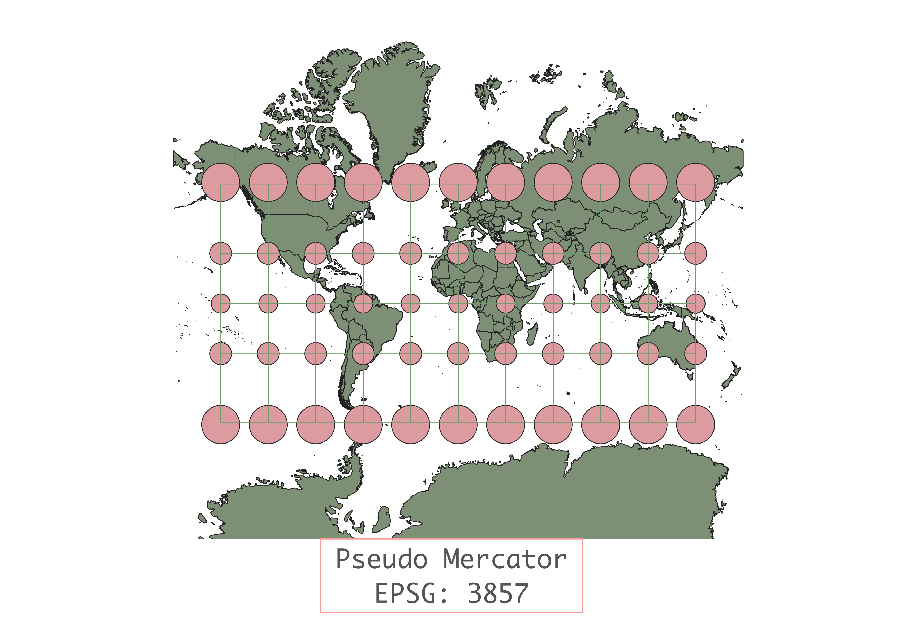
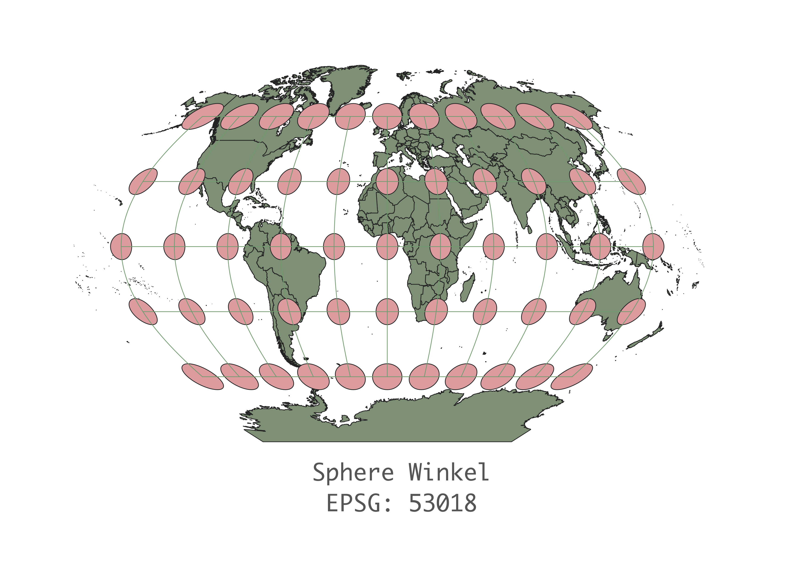
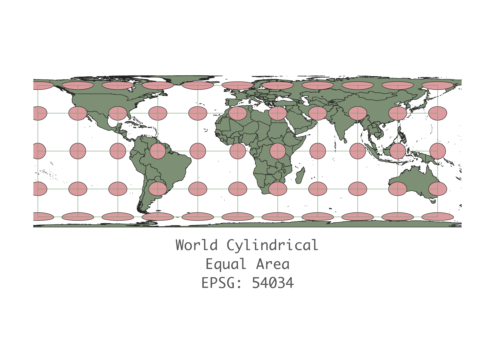
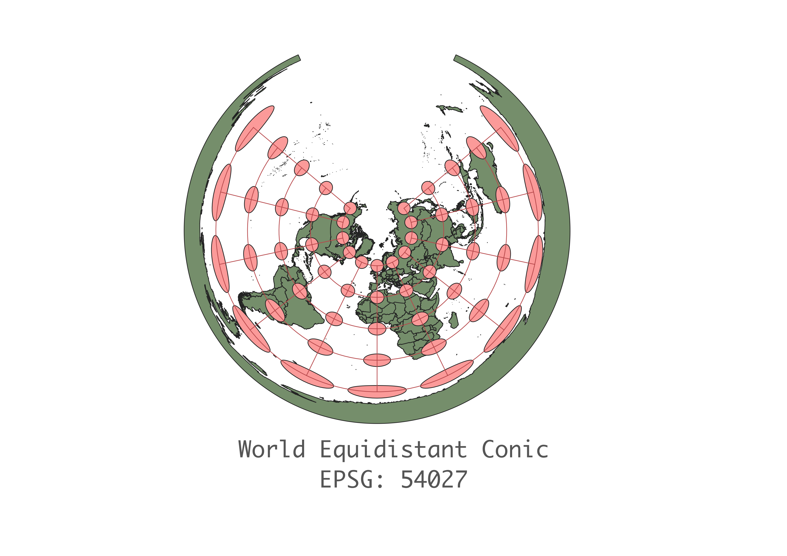
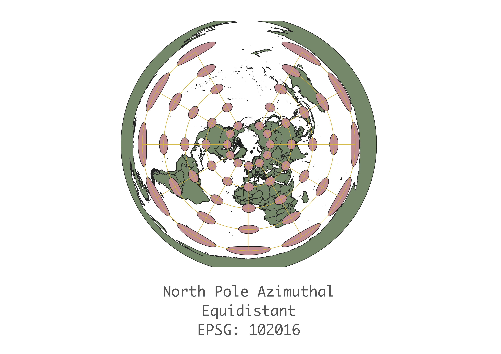
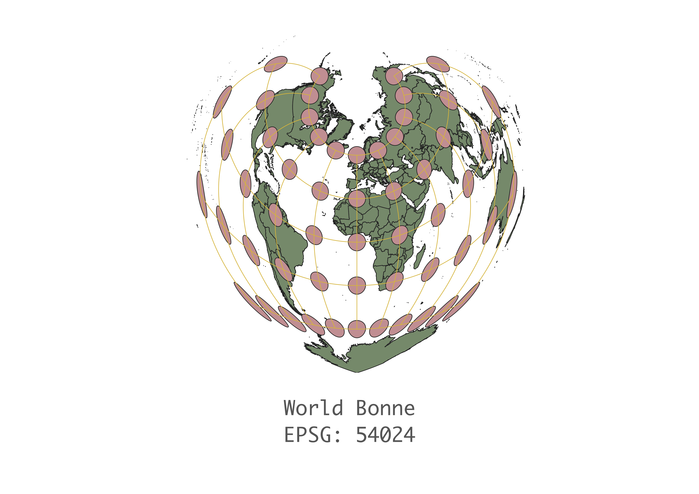
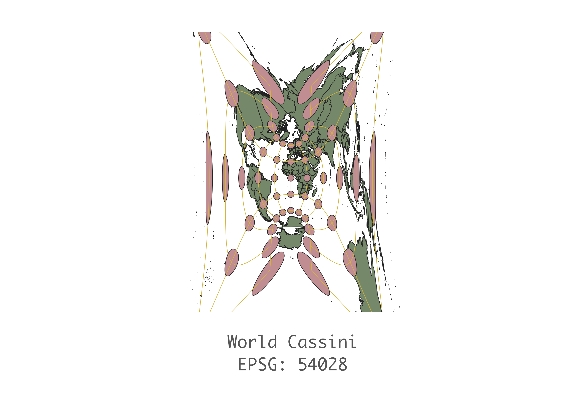

In this project I learned how to display images in different projections
I used QGIS to create maps of different projections by looking up the different EPSG or ESRI numbers. I then editied the colors in the item properties to make all the maps follow the same color scheme.
WGS84 Projection
This map projection preserves the shape and distance really well close to the equator, but there is heavy distortion at either one of the poles. As evident by the strethcing of the circles, we can see that the area and shape both get distorted immensly at the north and south pole.

Aitoff Projection
This map projection provides a good depiction of qualities right at the origin of the equator and prime meridian, but distorts shape, area, distance, direction, and angles to the north, south, east, and west.

Pseudo Mercator Projection
This projection preserves the shape of continents all over the globe, but distorts the size with increasing intensity closer to the poles.

Sphere Winkel Projection
This projection preserves size around the equator, but stretches the shape and distance at the poles.

World Cylindrical Equal Area
This projection preserves the shape and area close to the equator, but only continues to preserve the area as it moves towards the poles.

World Equidistant Conic
This projection preserves distance along the lattitudes where the cone was positioned in relevance to the globe, but distorts it elsewhere.

North Pole Azimuthal Equidistant
This projection preserves distance throughout the map, but greatly distorts size, area, and shape at the bottom of the cone projection, even more so than the World Equidistant Conic projection.

World Bonne
I chose this map because of the cute heart shape. It does appear to preserve area pretty well across the globe and preserves shape around the north pole, but not around the south pole or the antimeridian.

World Cassini
I chose this projection because of how crazy it looked. I could not imagine why anyone would choose this map to look at the Earth, I can see that the shape and angles are perfectly preserved right at the origin of the equator and prime meridian.

Data used for this project
Download Natrual Earth 1:10m Cultural Vector